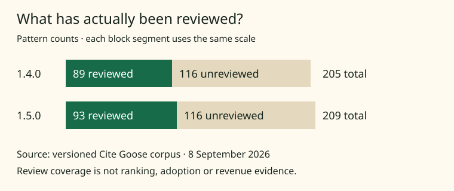

ASSET KIT 1.0.0 · 8 SEPTEMBER 2026
A figure you can check.
This example exposes the numbers, source versions and reuse terms beside the image. The measure is individual source-support review coverage in Cite Goose’s pattern corpus.

{kind=link}
Check the numbers
| Version | Reviewed | Unreviewed | Total |
|---|---|---|---|
| 1.4.0 | 89 | 116 | 205 |
| 1.5.0 | 93 | 116 | 209 |
Method and source
Count records in tactics with a non-null review.reviewed_at; subtract from all tactics for unreviewed records. Sources: 1.4.0 frozen corpus and 1.5.0 figure-source snapshot. These are repository observations, not Search Console or customer data.
Reuse and limitations
The figure, CSV and example code are provided under the repository’s Apache-2.0 license. Preserve applicable notices. No ranking-credit backlink is required. Cite Goose project · agent-assisted creation. This example does not claim an image badge, independent adoption or search performance.
To apply this format, use measurements your audience actually needs and publish their units, method, limitations and source version. Start with the asset brief.